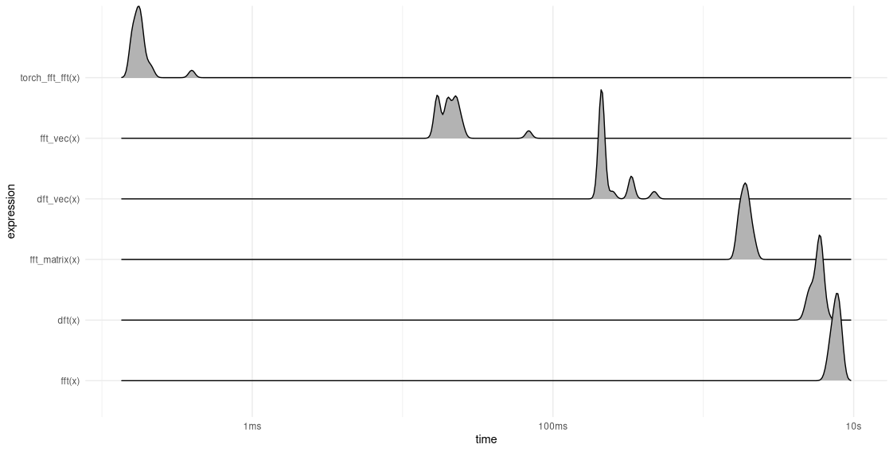
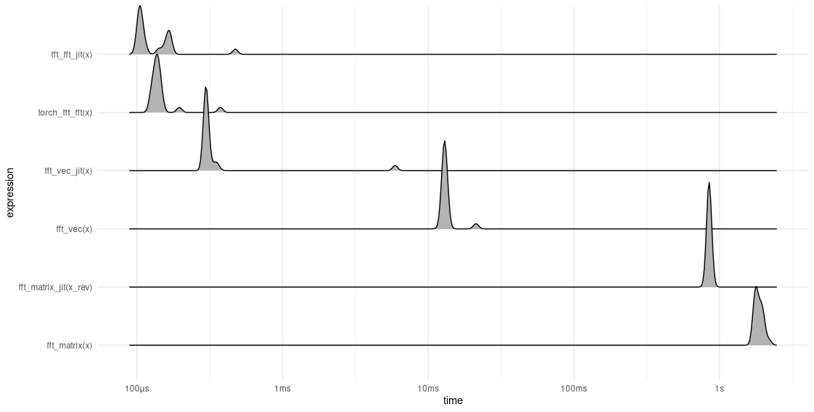

library(torch)
dft <- function(x) {
n_samples <- length(x)
n <- torch_arange(0, n_samples - 1)$unsqueeze(1)
F <- torch_complex(
torch_zeros(n_samples),
torch_zeros(n_samples)
)
for (k in 0:(n_samples - 1)) {
w_k <- torch_exp(-1i * 2 * pi / n_samples * k * n)
dot <- torch_matmul(w_k, x$to(dtype = torch_cfloat()))
F[k + 1] <- dot
}
F
}27 The Fast Fourier Transform (FFT)
In the last chapter, we saw that to code the Discrete Fourier Transform (DFT), we need just a few lines of code – notwithstanding the depth and richness of the theory. Surprisingly, it’s not that different for the FFT, the famous Fast Fourier Transform.
In this chapter, we’ll first look at what the FFT (more precisely: its “most classic” version) actually does, building on the understanding we gained in the previous chapter.
Then, we’ll code up a few different implementations, and time their performance. None of the hand-coded implementations will, of course, be able to outperform torch_fft_fft(), torch delegating to highly optimized C++ code. But our results will be interesting in many ways: We’ll see that in practice, it is not just the algorithm per se that matters. The programming language, too, plays an essential role, in the sense that its properties substantially affect feasibility of improvements. Put differently, there is an interaction between algorithmic and language-inherent properties that will decide on the final outcome.
First though, in this book’s spirit of aiming to shed a light on the ideas and concepts involved, we would like to understand what is involved in the Fast Fourier Transform.
27.1 Some terminology
Let me make clear right at the outset that, as compared to the DFT, the FFT is not another transform. Its output is just the same as that of the DFT. With the FFT, it’s all about the “fast”. Also, there is no “one” FFT. Instead, there are different families; and in each family, there are various sub-types.
Here, I’m focusing on the “classic among the classics”: the one that goes by radix-2 decimation-in-time (DIT). Here “radix-2” refers to an implementation detail; it indicates that the algorithm will require input size to equal a power of two. “Decimation in time”, on the other hand, relates to the overall strategy being employed: divide-and-conquer. The input is recursively split into halves, and partial results are combined in a clever way. (Just as an aside, there is a very similar algorithm called “decimation in frequency”. There, it is the frequency domain where recursive splitting occurs.)
Now, we discuss how this works. You’ll see that once we’ve worked out clearly what we want to do, a (naive) implementation does not require more code than the straightforward DFT from the last chapter. And please be assured that although this section has many equations, each and every manipulation will be explained in words.
27.2 Radix-2 decimation-in-time(DIT) walkthrough
The simplifications resulting from decimation in time can be presented as a two-step logic. Reflecting that view, and re-using (with different semantics) terminology employed in the convolution chapter, I could call them “input-view phase” and “output-view phase”. However, these are not phases in a temporal sense, and more importantly – in a software-focused book – we’ll see that as ported to code, their respective impacts differ a lot. Therefore, I’ll name the upcoming two sections in ways reflecting importance instead. (I’ll still make clear what I mean by input and output views here, though.)
27.2.1 The main idea: Recursive split
As we would expect for a divide-and-conquer algorithm, the main and most impactful observation is that if the input is split up recursively, the problem can be divided into sub-problems that get increasingly easier to solve – provided we know how to combine the partial results into a final solution.
Before we start, let me recall some notation, and make a slight modification that will turn out convenient. In the previous chapter, with \(N\) the size of the input (equivalently, the number of resulting frequency coefficients), and \(k\) (ranging from zero to \(N-1\)) referencing the vector in question, the DFT basis vectors were defined like so:
\[ \mathbf{w}^{kn}_N = e^{i\frac{2 \pi}{N}k n} \]
Then, the \(k\)th frequency coefficient was obtained by computing the inner product between \(\mathbf{w}^{kn}_N\) and the input, \(\mathbf{x}_n\):
\[ \begin{aligned} X_k &= \langle \mathbf{w}^{kn}_N, \mathbf{x}_n \rangle \\ &= \sum_{n=0}^{N-1} x[n] \ w^{-nk}_N\\ \end{aligned} \]
In this chapter, we will be working with the complex conjugates of the basis vectors throughout, since it’s those that actually get (element-wise) multiplied with the input vector. For convenience, we thus slightly change notation, and let \(w^{kn}_N\) refer to the conjugated complex exponential1:
\[ w^{kn}_N = e^{-i\frac{2 \pi}{N}k n} \tag{27.1}\]
Then, abstracting over \(n\), we also have \[ w^k_N = e^{-i\frac{2 \pi}{N}k} \tag{27.2}\]
That said, we state again what we want to compute: the frequency coefficients \(X_k\).
\[ \begin{aligned} X_k &= \sum_{n=0}^{N-1} x[n] \ w^{nk}_N\\ \end{aligned} \]
Now comes what I was thinking to refer to as the “input view”. We take the input sequence, and divide up the computation into two parts. One will deal with the even, the other, with the odd indices of the signal. So expressed, the sums only go up to \(N/2 - 1\).
\[ \begin{aligned} X_k &= \sum_{n=0}^{(N/2-1)} x[2n] \ w^{2nk}_N + \sum_{n=0}^{N/2-1} x[2n+1] \ w^{(2n+1)k}_N \\ \end{aligned} \tag{27.3}\]
Now, that second sum can be rewritten, splitting up the \(w^{2nk+k}_N\) into two factors:
\[ \sum_{n=0}^{N/2-1} x[2n+1] \ w^{2nk+k}_N = \sum_{n=0}^{N/2-1} x[2n+1] \ w^{2nk}_N w^{k}_N \]
The second factor is exactly the \(w^{k}_N\) we were introducing above. Since it does not depend on \(n\), we can move it out of the sum. This yields
\[ \begin{aligned} X_k &= \sum_{n=0}^{(N/2-1)} x[2n] \ w^{2nk}_N + w^k_N \sum_{n=0}^{N/2-1} x[2n+1] \ w^{2nk}_N \\ \end{aligned} \]
Now the exponential factor is the same in both sums. Let’s inspect it a bit more closely. It is the multiplication factor of a DFT of size \(N\), at (frequency-by-time) position \(2nk\). If we write this out, we see that we can move the factor \(2\) from the numerator to the denominator of the fraction:
\[ w^{2nk}_N = e^{-i\frac{2 \pi}{N}2nk} = e^{-i\frac{2 \pi}{N/2}nk} = w^{nk}_{N/2} \]
Why does this matter? The result is actually the corresponding basis vector of a DFT of size \(N/2\), at position \(nk\). Which means that now, we are actually computing a DFT of half the size – or rather, two such DFTs:
\[ X_k = \sum_{n=0}^{(N/2-1)} x[2n] \ w^{nk}_{N/2} + w^k_N \ \sum_{n=0}^{N/2-1} x[2n+1] \ w^{nk}_{N/2} \\ \tag{27.4}\]
Let’s write this in more readable form:
\[ X_k = X^{even}_k + w^k_N \ X^{odd}_k \tag{27.5}\]
Now, you probably see where this is going. What we’ve done once – halve the size of the computation – we can do again … and again. It is this recursive halving that allows the FFT to obtain it famous reduction in computational cost.
This is the main ingredient of the magic, but it is not quite everything yet.
27.2.2 One further simplification
There is one additional simplification we can make. Compared to the first, it is of lesser significance, at least as far as computational performance is concerned. However, it definitely matters from an aesthetics point of view.
Did you notice something strange in our final formula? We are computing DFTs of size \(N/2\), but still, the factor \(w^k_N\) appears! This isn’t a problem, but it is not “nice”, either. Fortunately, for those who mind, the “inconsequence” can be eliminated.
What follows is what I was tempted to name the “output-side view”. That’s because now, we roll up things from the end, starting from the computation’s output. We take the set of Fourier coefficients \(X_k\), and independently consider the first and the second half. Note how here, like in the input-centric view, we apply a split-in-two strategy; just this time, the halving is done in a different way.
Looking at both halves, we notice that both have their dedicated subsets of multiplication factors \(w^k_N\), one with \(k\) ranging from \(0\) to \(N/2-1\), the other, from \(N/2\) to \(N-1\). For the first, this means we can change the upper limit in the sum, yielding
\[ X^{upper}_k = X^{even}_k + w^k_N \ X^{odd}_k \ , \ \ k = 0 ... N/2-1 \]
For the second, we can achieve the desired result by summing over the same range, but adding \(N/2\) to \(k\) everywhere.
\[ X^{lower}_{k+N/2} = \sum_{n=0}^{N/2-1} x[2n] \ w^{n (k+N/2)}_{N/2} + w^{k+N/2}_N \ \sum_{n=0}^{N/2-1} x[2n + 1] \ w^{n (k+ N/2)}_{N/2} \\ \]
Now, in the first of the sums that make up \(X^{lower}\), the exponential can be factored, and we see that the factor containing the \(N/2\) evaluates to \(1\) (and thus, disappears):
\[ \begin{aligned} w^{n(k+N/2)}_{N/2}&= e^{-i\frac{2 \pi}{N/2} n (k + N/2)} \\ &= e^{-i\frac{2 \pi}{N/2}n k} * e^{-i\frac{2 \pi}{N/2}n (N/2)} \\ &= e^{-i\frac{2 \pi}{N/2}n k} * e^{-i\frac{2 \pi}{N/2}(N/2)} \\ &= e^{-i\frac{2 \pi}{N/2}n k} * 1 \end{aligned} \]
As a result, the first of the sums now looks like this:
\[ X^{lower}_{k+N/2} = \sum_{n=0}^{N/2-1} x[2n] \ w^{n k}_{N/2} + [...] \]
The same thing can be done in the second sum:
\[ X^{lower}_{k+N/2} = [...] + w^{k+N/2}_N \ \sum_{n=0}^{N/2-1} x[2n + 1] \ w^{n k}_{N/2} \\ \]
Now there’s just one last inconvenient index of \(k + N/2\) remaining. A calculation similar to that above shows we can replace it by a minus sign:
\[ \begin{aligned} w^{k+N/2}_N&= e^{-i\frac{2 \pi}{N} (k + N/2)} \\ &= e^{-i\frac{2 \pi}{N} k} * e^{-i\frac{2 \pi}{N} N/2}\\ &= e^{-i\frac{2 \pi}{N} k} * e^{-i \pi}\\ &= e^{-i\frac{2 \pi}{N} k} * (-1)\\ \end{aligned} \]
In consequence, the complete second part can be written like this:
\[ X^{lower}_{k+N/2} = \sum_{n=0}^{N/2-1} x[2n] \ w^{n k}_{N/2} - w^k_N \ \sum_{n=0}^{N/2-1} x[2n + 1] \ w^{n k}_{N/2} \]
And now, the second half looks nearly like the first one, just with a change in sign. Here, then, is the final algorithm:
\[ \begin{aligned} & X^{upper}_k = X^{even}_k + w^k_N \ X^{odd}_k \ , \ \ k = 0 ... N/2-1 \\ & X^{lower}_{k+N/2} = X^{even}_k - w^k_N \ X^{odd}_k \ , \ \ k = 0 ... N/2-1 \end{aligned} \tag{27.6}\]
Owed to a popular form of visualization, this representation is often referred to as the “butterfly”. If you’re curious, you won’t have problems finding related diagrams on the net. Personally, I don’t find them very helpful, which is why I’m not reproducing them here.
In conclusion, we’ve now arrived at a rule that tells us how to simplify an FFT of size \(N\) by replacing it with an FFT of size \(N/2\). The complete algorithm then consists in recursive application of that rule.
We’re ready to start thinking about how to implement this.
27.3 FFT as matrix factorization
Below, we’ll explore different ways of coding the FFT. In two of them, you’ll directly recognize the rule Equation 27.6. The third is different, though. It makes direct use of the fact that the DFT matrix \(\mathbf{W}_N\) can be factored into three sparse matrices, each materializing one of the three stages inherent in the rule: split up the input into even and odd indices; compute the two half-sized FFTs; recombine the results.
For example, take \(\mathbf{W}_4\), the matrix we analyzed in the previous chapter:
\[ \mathbf{W}_4 = \begin{bmatrix} 1 & 1 & 1 & 1\\ 1 & -i & -1 & i\\ 1 & -1 & 1 & -1\\ 1 & i & -1 & -i\\ \end{bmatrix} \]
This can be factorized into three matrices like so:
\[ \begin{aligned} \mathbf{W}_4 &= \begin{bmatrix} 1 & 1 & 1 & 1\\ 1 & -i & -1 & i\\ 1 & -1 & 1 & -1\\ 1 & i & -1 & -i\\ \end{bmatrix} \\ &= \begin{bmatrix} 1 & 0 & 1 & 0\\ 0 & 1 & 0 & -i\\ 1 & 0 & -1 & 0\\ 0 & 1 & 0 & i\\ \end{bmatrix} \begin{bmatrix} 1 & 1 & 0 & 0\\ 1 & -1 & 0 & 0\\ 0 & 0 & 1 & 1\\ 0 & 0 & 1 & -1\\ \end{bmatrix} \begin{bmatrix} 1 & 0 & 0 & 0\\ 0 & 0 & 1 & 0\\ 0 & 1 & 0 & 0\\ 0 & 0 & 0 & 1\\ \end{bmatrix} \end{aligned} \]
The rightmost matrix (call it \(P\), for permutation) reorders the input. Here’s how it acts on a suitably-sized input vector.
\[ \mathbf{P}_4 \mathbf{x} = \begin{bmatrix} 1 & 0 & 0 & 0\\ 0 & 0 & 1 & 0\\ 0 & 1 & 0 & 0\\ 0 & 0 & 0 & 1\\ \end{bmatrix} \begin{bmatrix} x1 \\ x2 \\ x3 \\ x4 \\ \end{bmatrix} = \begin{bmatrix} x1 \\ x3 \\ x2 \\ x4 \\ \end{bmatrix} \]
Now that even- and odd-indexed values are nicely separated, we can construct a block matrix that applies a DFT to each of those groups in isolation. In this case, the DFT in question is of size two. If you look at the central matrix above, you’ll see that it contains two instances of \(\mathbf{W}_2\), with \(\mathbf{W}_2\) being
\[ \mathbf{W}_2 = \begin{bmatrix} 1 & 1 \\ 1 & -1 \\ \end{bmatrix} \]
Taking as input the permuted signal, \(\mathbf{P}_4 \mathbf{x}\), the block matrix produces the following output:
\[ \mathbf{W}_{2*2}\mathbf{P}_{4}\mathbf{x} = \begin{bmatrix} 1 & 1 & 0 & 0\\ 1 & -1 & 0 & 0\\ 0 & 0 & 1 & 1\\ 0 & 0 & 1 & -1\\ \end{bmatrix} \begin{bmatrix} x1 \\ x3 \\ x2 \\ x4 \\ \end{bmatrix} = \begin{bmatrix} x1+x3 \\ x1-x3 \\ x2+x4 \\ x2-x4 \\ \end{bmatrix} \]
Next, the two sets of coefficients need to be recombined in the correct way. Personally, I find it hard to mentally picture how the leftmost matrix in the factorization does it; so let’s try if we can build up the matrix ourselves.
The FFT rule Equation 27.6 tells us what has to happen. Here it is again:
\[ X^{upper}_k = X^{even}_k + w^k_N \ X^{odd}_k \ , \ \ k = 0 ... N/2-1 \]
\[ X^{lower}_{k+N/2} = X^{even}_k - w^k_N \ X^{odd}_k \ , \ \ k = 0 ... N/2-1 \]
In this example, \(N/2\) is 2; we thus need \(w^0_4\) and \(w^1_4\). Their values are
\[ \begin{aligned} &w^0_4 = e^{-i\frac{2 \pi}{4}0} = 1\\ &w^1_4 = e^{-i\frac{2 \pi}{4}1} = -i\\ \end{aligned} \]
As an aside, we could also have read them off the transformation matrix, \(W_4\): These are the first two basis vectors, computed at \(n=1\), and thus are found right on top of the second column.
Now, we just mechanically apply the rule.
\[ \begin{aligned} &X_0 = X^{upper}_0 = X^{even}_0 + w^0_4 \ X^{odd}_0 = (x_1 + x_3) + 1 * (x_2 + x_4) \\ &X_1 = X^{upper}_1 = X^{even}_1 + w^1_4 \ X^{odd}_1 = (x_1 - x_3) - i * (x_2 - x_4) \\ &X_2 = X^{lower}_2 = X^{even}_0 - w^0_4 \ X^{odd}_0 = (x_1 + x_3) - 1 * (x_2 + x_4) \\ &X_3 = X^{lower}_3 = X^{even}_1 - w^1_4 \ X^{odd}_1 = (x_1 - x_3) + i * (x_2 - x_4) \\ \end{aligned} \]
This gives us the multiplication factors to be applied to the vector input. All that remains to be done is put them into a matrix. Directly reading off the above equations, and filling in zeroes whenever an input is not used, this is what we obtain for the “butterfly” matrix \(\mathbf{B}\):
\[ \mathbf{B}_4 = \begin{bmatrix} 1 & 0 & 1 & 0\\ 0 & 1 & 0 & -i\\ 1 & 0 & -1 & 0\\ 0 & 1 & 0 & i\\ \end{bmatrix} \]
Comparing with the leftmost matrix in the factorization, we see we’ve arrived at the correct result.
One thing that’s not immediately clear, however, is how to implement this recursively. It certainly seems like a lot of overhead to compute the complete matrix factorization at every recursive step. Fortunately, this is not needed. For one, the sorting can be done just once, right in the beginning. And secondly, it turns out that the matrices I’ve been referring to as \(\mathbf{W}_{2*2}\) and \(\mathbf{B}_{4}\) are intimately related: \(\mathbf{B}_{4}\) is what would go into a block matrix \(\mathbf{W}_{4*4}\).
The recursive procedure can then be laid out very clearly. Here, for example, is how the complete procedure would look for an input size of 8:
\[ \mathbf{W}_8 = \mathbf{B}_8 \begin{bmatrix} \mathbf{B}_4 & \mathbf{0}\\ \mathbf{0} & \mathbf{B}_4\\ \end{bmatrix} \begin{bmatrix} \mathbf{B}_2 & \mathbf{0} & \mathbf{0} & \mathbf{0}\\ \mathbf{0} & \mathbf{B}_2 & \mathbf{0} & \mathbf{0}\\ \mathbf{0} & \mathbf{0} & \mathbf{B}_2 & \mathbf{0}\\ \mathbf{0} & \mathbf{0} & \mathbf{0} & \mathbf{B}_2\\ \end{bmatrix} \mathbf{R} \]
\(\mathbf{R}\) is the matrix that, once and for all, sorts the input in the required way. I’ve written \(\mathbf{R}\) for “bit reversal”, since that is the actual algorithm used. We won’t go into its workings here, but explanations are readily found on the web.
Having discussed DFT matrix factorization, we’re ready to look at some code.
27.4 Implementing the FFT
We discuss and compare for performance three different implementations of the FFT, plus our two DFT versions from the last chapter. Let me start by listing, again, what we did there.
27.4.1 DFT, the “loopy” way
This was the way we first coded the DFT, computing the dot products between input and each basis vector in a loop.
27.4.2 DFT, vectorized
Next, we went on to replace the loop by arranging the basis vectors in a matrix.
dft_vec <- function(x) {
n_samples <- length(x)
n <- torch_arange(0, n_samples - 1)$unsqueeze(1)
k <- torch_arange(0, n_samples - 1)$unsqueeze(2)
mat_k_m <- torch_exp(-1i * 2 * pi/n_samples * k * n)
torch_matmul(mat_k_m, x$to(dtype = torch_cfloat()))
}27.4.3 Radix-2 decimation in time FFT, recursive
Just like we did for the DFT algorithm per se, we can straightforwardly, by-specification implement the FFT. This time, the logically-imposed design is recursive, not iterative. In each call to fft(), the input is split into even and odd indices, respective half-size FFTs are computed, and the two sets of outputs are combined as required.
# straightforward, recursive implementation of the FFT.
# Expects input size to be a power of 2.
fft <- function(x) {
n_samples <- length(x)
if (n_samples == 1) {
return(x)
}
X_upper <- fft(x[1:n_samples:2])
X_lower <- fft(x[2:n_samples:2])
w_k <- torch_exp(
-2 * pi * torch_complex(0, 1) *
torch_arange(0, n_samples / 2 - 1) / n_samples
)
torch_cat(list(
X_upper + w_k * X_lower,
X_upper - w_k * X_lower
))
}This function expects input size to equal a power of two.
27.4.4 Radix-2 decimation in time FFT by matrix factorization
Next, we implement the matrix-factorization strategy described above. fft_vec() is a generalization of the logic spelt out in Brad Osgood’s wonderful book on the Fourier Transform (Osgood (2019)).
We sort the input tensor (a single time), apply successive block matrices of doubled-in-size “butterflies”, and multiply the result with a single butterfly matrix of size matching the number of inputs.
The sorting may conveniently be done using bitrevorder(), a function provided by the R package gsignal.
In the loop, you can see how the butterfly matrices are built: They consist of a combination of identity matrices with diagonal matrices holding the \(w^k_N\).
library(torch)
library(gsignal)
# requirements: input length is at least 4, and a power of 2
fft_matrix <- function(x) {
# perform sorting just once, a the beginning
x <- torch_tensor(
bitrevorder(as.numeric(x)),
dtype = torch_cfloat()
)
n_samples <- length(x)
# smallest butterfly matrix, needed for all valid inputs
B2 <- torch_tensor(
c(1, 1, 1, -1),
dtype = torch_cfloat()
)$view(c(2, 2))
B2_block <- torch_block_diag(
B2$`repeat`(c(n_samples / 2, 1))$split(2)
)
acc <- torch_matmul(B2_block, x)
# iterative implementation then starts with B4
n <- 4
while (n <= n_samples) {
# build up current butterfly matrix
I <- torch_eye(n / 2)
O <- torch_diag(
torch_exp(
-1i * 2 * pi *
torch_arange(0, n / 2 - 1) / (n / 2 * 2)
)
)
B <- torch_cat(list(
torch_cat(list(I, O), dim = 2),
torch_cat(list(I, -O), dim = 2)
), dim = 1)
# in the final multiplication,
# B directly matches input length
if (n == n_samples) {
return(torch_matmul(B, acc))
}
# create block-diagonal matrix from butterflies
# at each iteration,
# we need to replicate B {n_samples/rank(B) times}
# this is achieved by first repeating B row-wise,
# then splitting up into rank(n) parts)
B_block <- torch_block_diag(
B$`repeat`(c(n_samples / n, 1))$split(n)
)
acc <- torch_matmul(B_block, acc)
n <- n * 2
}
acc
}27.4.5 Radix-2 decimation in time FFT, optimized for vectorization
Finally, let me present one more implementation. It is a literal translation of the Python code published by Jake van der Plas on his blog. Although it looks more involved than the recursive fft() above, it really implements the same algorithm, all while making use of vectorization as much as possible. In other words, it is to fft() what dft_vec() is to dft().
# torch translation of
# http://jakevdp.github.io/blog/2013/08/28/
# understanding-the-fft/#Vectorized-Numpy-Version
fft_vec <- function(x) {
n_samples <- length(x)
# could be chosen higher for performance reasons
n_min <- 2
# Perform an O[N^2] DFT on all length-N_min
# sub-problems at once
n <- torch_arange(0, n_min - 1)$unsqueeze(1)
k <- torch_arange(0, n_min - 1)$unsqueeze(2)
# by starting with one (vectorized-by-matmul)
# "classic DFT" (instead of a block matrix of B_mins),
# we don't need the bitrevorder step
mat_k_m <- torch_exp(-1i * 2 * pi / n_min * k * n)
F <- torch_matmul(
mat_k_m,
x$to(dtype = torch_cfloat())$reshape(list(n_min, -1))
)
# build-up each level of the recursive calculation
# all at once
while (dim(F)[1] < n_samples) {
F_first <- F[, 1:(dim(F)[2] / 2)]
F_second <- F[, (dim(F)[2] / 2 + 1):dim(F)[2]]
# only need first half of w_ks
w_k <- torch_exp(
-1i * pi *
torch_arange(0, dim(F)[1] - 1) / dim(F)[1]
)$unsqueeze(2)
F <- torch_vstack(list(
F_first + w_k * F_second,
F_first - w_k * F_second
))
# w_k * F_second multiplies both at once (column-wise)
}
F$ravel()
}27.4.6 Checking against torch_fft_fft()
Now, before we compare those five functions performance-wise, let’s check whether they yield the same results as torch_fft_fft(). We don’t expect identity over a large number of decimal places; but it will be good to know about eventual differences in accuracy between the different implementations.
x <- torch_randn(2^13)
atol <- 1e-4
y_ref <- torch_fft_fft(x)
y_dft <- dft(x)
y_dft_vec <- dft_vec(x)
y_fft <- fft(x)
y_fft_vec <- fft_vec(x)
y_fft_matrix <- fft_matrix(x)
torch_allclose(y_dft, y_ref, atol = atol)
torch_allclose(y_dft_vec, y_ref, atol = atol)
torch_allclose(y_fft, y_ref, atol = atol)
torch_allclose(y_fft_vec, y_ref, atol = atol)
torch_allclose(y_fft_matrix, y_ref, atol = atol)[1] FALSE
[1] FALSE
[1] TRUE
[1] TRUE
[1] TRUEReassuringly, the FFT implementations all seem sufficiently accurate.
27.4.7 Comparing performance
To assess relative performance, we again use bench::mark(), with twenty iterations per function (fig. 27.1).
set.seed(777)
torch_manual_seed(777)
library(bench)
library(dplyr)
library(ggplot2)
res <- mark(dft(x),
dft_vec(x),
fft(x),
fft_vec(x),
fft_matrix(x),
torch_fft_fft(x),
iterations = 20,
check = FALSE
)
res %>%
mutate(
expression =
forcats::fct_reorder(as.character(expression),
min,
.desc = TRUE
)
) %>%
as_bench_mark() %>%
autoplot(type = "ridge") + theme_minimal()
torch_fft_fft() for reference.Unsurprisingly, none of the implementations comes close to torch_fft_fft(). Intriguingly, though, we see enormous differences in execution time between our manual implementations. There is an important insight to be had. Algorithmic properties are like Platonic ideas: pure and noble in theory, but often, hard to enliven in the lowlands of everyday life. Here, the hard facts of reality concern the defining features of the software stack one is using, and in particular, the characteristics of the programming language involved. Let me elaborate.
In torch as well as in R, the language, vectorized operations are much more efficient than iteration (let alone recursion). In that light, we can make sense of the results like so:
dft()andfft(), the straightforward realizations, are slowest, since they don’t use vectorized operations. Among those two,fft(), which – in theory – should be superior, is severely punished for relying on recursion, whose use is strongly discouraged in R.- Both vectorized implementations,
dft_vec()andfft_vec(), perform decidedly better than their un-vectorized counterparts. Among these,fft_vec()is a lot faster thandft_vec(), which is exactly what we’d like to see. - Given its conceptual and aesthetic appeal, the outcome for
fft_matrix()is a bit disappointing.
Inspired by wishful thinking, is there anything we could do?
27.4.8 Making use of Just-in-Time (JIT) compilation
We can try. In torch, a functionality named Just-in-Time (JIT) compilation allows us to trace a function, or a model, to obtain a highly optimized graph representation. This capability is useful in a number of ways: to reduce execution time, evidently; but also if, for example, you’d like to deploy a model (trained in R) in an environment that does not have R installed. If you’re interested, please see the vignette, as well as a dedicated blog post. Here, we’ll just directly put JIT compilation to practical use.
All we have to do is call a function, jit_trace(), with a dummy tensor, whose shape has to match the shape of future intended inputs. We want to do this for the two most promising FFT implementations, fft_vec() and fft_matrix(), as well as torch’s own torch_fft_fft(). The one thing to be aware of is that, should we think the improvement is worth it, we will need to trace the function for all input shapes we’re interested in. (Considering that our implementations expect input size to be a power of two, that wouldn’t be too much of a problem.)
Above, the input size we used for benchmarking amounted to 2^13, so this is what we’ll use for tracing, too. Here, first, we run jit_trace() for fft_vec() and torch_fft_fft():
x_trace <- torch_randn(2^13)
fft_vec_jit <- jit_trace(fft_vec, x_trace)
fft_fft_jit <- jit_trace(torch_fft_fft, x_trace)The case of fft_matrix(), however, is a bit special: Inside, we’re calling bitrevorder(), a function that should not be part of the torch graph. A workaround, however, is quickly found: Just move that part of the logic outside the function – it scarcely contributes to execution time, anyway. The redefined function now looks like this:
fft_matrix_for_jit <- function(x) {
x <- x$to(dtype = torch_cfloat())
n_samples <- length(x)
# smallest butterfly matrix, needed for all valid inputs
B2 <- torch_tensor(
c(1, 1, 1, -1),
dtype = torch_cfloat()
)$view(c(2, 2))
B2_block <- torch_block_diag(
B2$`repeat`(c(n_samples / 2, 1))$split(2)
)
acc <- torch_matmul(B2_block, x)
# iterative implementation then starts with B4
n <- 4
while (n <= n_samples) {
# build up current butterfly matrix
I <- torch_eye(n / 2)
O <- torch_diag(
torch_exp(
-1i * 2 * pi *
torch_arange(0, n / 2 - 1) / (n / 2 * 2)
)
)
B <- torch_cat(list(
torch_cat(list(I, O), dim = 2),
torch_cat(list(I, -O), dim = 2)
), dim = 1)
# in the final multiplication,
# B directly matches input length
if (n == n_samples) {
return(torch_matmul(B, acc))
}
# create block-diagonal matrix from butterflies
# at each iteration,
# we need to replicate B {n_samples/rank(B) times}
# this is achieved by first repeating B row-wise,
# then splitting up into rank(n) parts)
B_block <- torch_block_diag(
B$`repeat`(c(n_samples / n, 1))$split(n)
)
acc <- torch_matmul(B_block, acc)
n <- n * 2
}
acc
}We trace it with pre-sorted input:
fft_matrix_jit <- jit_trace(
fft_matrix_for_jit,
torch_tensor(
bitrevorder(as.numeric(x_trace)),
dtype = torch_cfloat()
)
)In benchmarking, we call fft_matrix_jit() with a pre-sorted tensor, as well. Here, then, is a comparison of fft_vec(), fft_matrix(), torch_fft_fft(), and their respective optimized versions (fig. 27.2):
x_rev <- torch_tensor(
bitrevorder(
as.numeric(x_trace)
),
dtype = torch_cfloat()
)
res <- mark(fft_vec(x),
fft_matrix(x),
torch_fft_fft(x),
fft_vec_jit(x),
fft_matrix_jit(x_rev),
fft_fft_jit(x),
iterations = 20,
check = FALSE
)
res %>%
mutate(
expression = forcats::fct_reorder(
as.character(expression),
min,
.desc = TRUE
)
) %>%
as_bench_mark() %>%
autoplot(type = "ridge") + theme_minimal()
fft_vec(), fft_matrix(), and torch_fft_fft().Two things, I’d say, are remarkable about this result. First, each of the three implementations benefits from getting JIT-compiled, even torch_fft_fft().
Second, there is one that profits a lot: namely, fft_vec(). In its compiled version, it is nearly as fast as torch_fft_fft() – a function that, remember, has all calculations done in highly optimized C++ code. This again underlines the enormous impact “linguistic fit” has on final performance outcomes.
By now, we’ve learned a lot about the Discrete Fourier Transform, including how to implement it in an efficient way. With all that knowledge, we should feel comfortable enough making direct use of torch_fft_ftt(). This is exactly what we’ll do in the next – and final – chapter: We’ll complement classic Fourier Analysis with its younger counterpart, wavelets.
Note that now we have a scalar, not a vector.↩︎